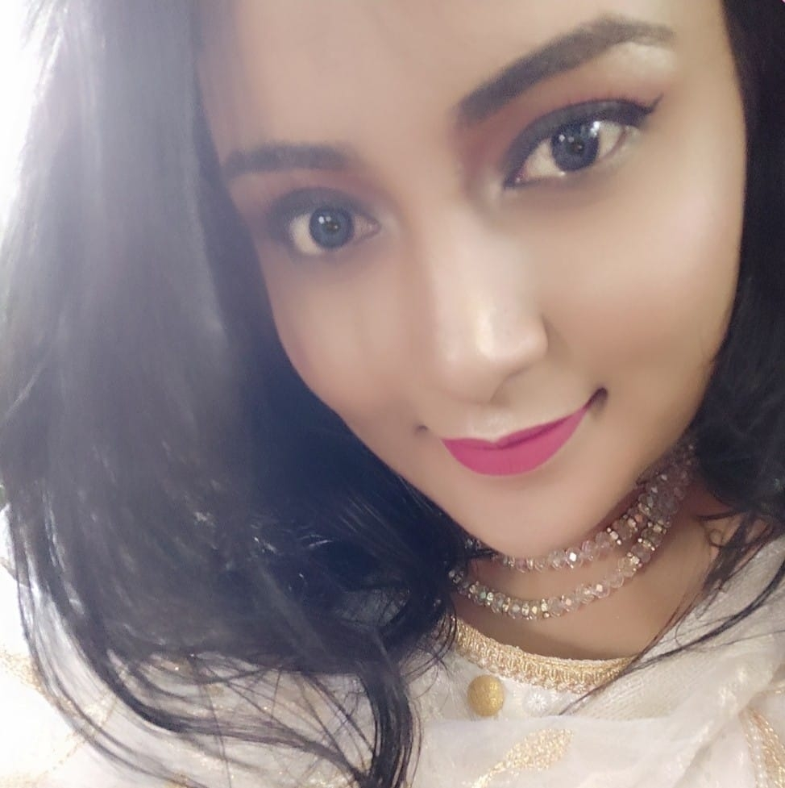

Follow me
I am Khadiza Akter Chowa, I am studies B.sc in Computer Science and Engineering at Daffodil International University.I'm a software developer and computer programmer with an avid interest in Data Structures and Algorithms. As a Software Developer, I love taking challenges and love being part of the solution.Solid Programming expertise in Python, C/C++, Object Oriented analysis/methodologies. Enthusiastic team player, a fast learner with creative problem solving skills, good coding and communication skills.